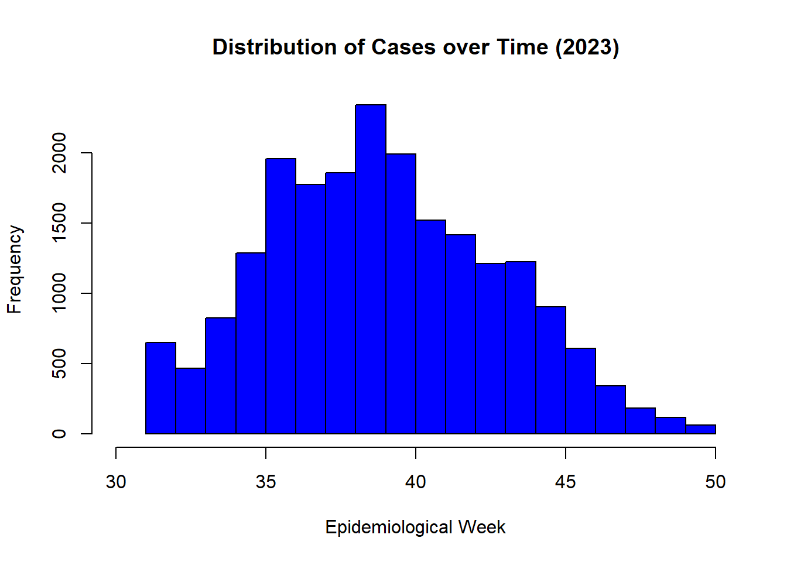
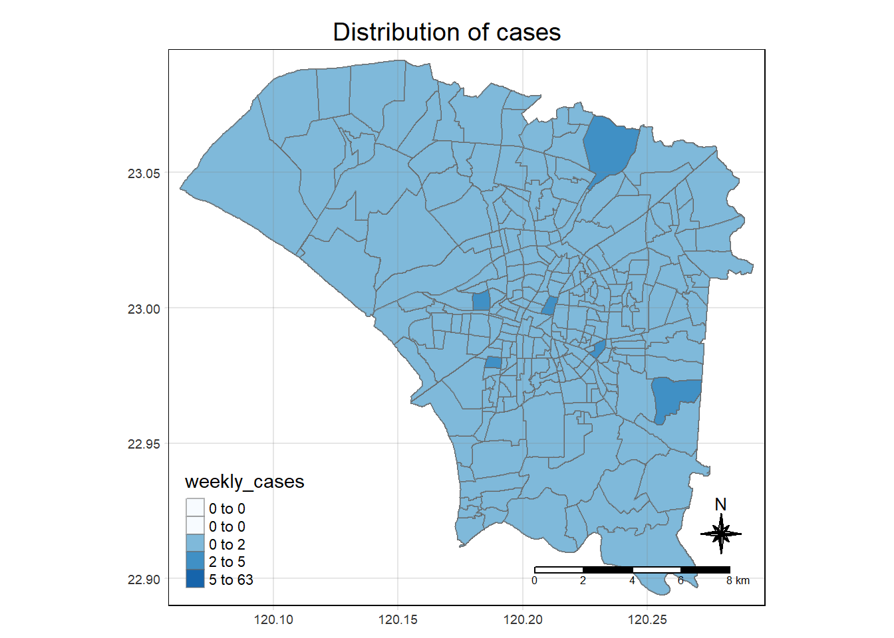

pacman::p_load(tidyverse, sf, sfdep, tmap, readr)Take-home Exercise 2
Project Objectives
For this geospatial task, we have been tasked to discover:
if the distribution of dengue fever outbreak at Tainan City, Taiwan are independent from space and space and time.
If the outbreak is indeed spatial and spatio-temporal dependent, then, you would like to detect where are the clusters and outliers, and the emerging hot spot/cold spot areas.
Installing R packages
For the technical portion of the take home exercise, I will be using the following packages:
tidyverse
sf
sfdep
tmap
readr
Data import and cleaning
Geospatial data
For geospatial data, using st_read(), I will import the geospatial data file TAINAN_VILLAGE, which contains the geospatial data of village boundary of Taiwan.
taiwan <- st_read(dsn = "data/geospatial",
layer = "TAINAN_VILLAGE")
Note
The data is in Taiwan Geographic Coordinate System, TWD97. This should be kept unchanged to ensure that the data is as accurate as possible to the collected data.
Now the map can be plotted so that we can see what we are working with, grouped by TOWNID column.
plot(taiwan["TOWNID"])The geospatial data here is not limited to only the city of Tainan. To filter out Tainan City for the use of this exercise, I will filter for the following counties:
D01
D02
D04
D06
D07
D08
D32
D39
This will make the later parts of data cleaning faster due to having less to process.
From inspecting the data table of tainan, it can be seen that the counties data is found in the TOWNID column, so I will be filtering them from there.
study_area <- taiwan %>%
filter(TOWNID == "D01" | TOWNID == "D02" | TOWNID == "D04" |
TOWNID == "D06" | TOWNID == "D07" | TOWNID == "D08" |
TOWNID == "D32" | TOWNID == "D39")
plot(study_area["TOWNID"])Now, we can check for any missing geospatial data from the desired study areas.
any(is.na(study_area$geometry))With these checks done, we can save the data in the rds format to allow for faster data retrieval.
write_rds(study_area, "data/rds/tainan_study.rds")Aspatial data
For aspatial data, I will be using read_csv() to import the csv file Dengue_Daily, which contains the aspatial data of reported dengue cases in Taiwan.
disease_data <- read_csv("data/aspatial/Dengue_Daily.csv")Again, the data is not limited to only the city of Tainan. Before cleaning, I inspected the data using the tab on the side (the data is large and difficult to examine using methods such as head()) and found that almost all of the data and all of the attribute columns are written in Simplified Chinese.
Right now, I want to narrow the data to only reported cases within the city of Tainan. To do that, I will be using filter() to retrieve all data that are labelled as 台南市 in the attribute column 居住縣市
tainan_cases <- disease_data %>%
filter(居住縣市 == "台南市")With this narrower list, we can look at the attribute columns. For this exercise, the most important ones are the following:
| Attribute | Translation |
|---|---|
| 發病日 | Onset date |
| 最小統計區中心點X | X-coordinate |
| 最小統計區中心點Y | Y-coordinate |
Epidemiology week - research
The exercise calls for the use of epidemiology weeks, but what are they?
According to the Central Massachusetts Mosquito Control Project (CMMCP), epidemiological weeks are “a standardized method of counting weeks to allow for the comparison of data year after year”. By default, Sunday is marked as the beginning of an epidemiology week and Saturday is the end of an epidemiology week.
But why use epidemiological weeks? CMMCP explains that for certain types of data, such as mosquito surveillance, “daily increments are too frequent and too varied to be able to be managed and analyzed, or there are many factors that make it impossible to compare daily results”, and frequent data interpretation is required. Hence, an epidemiological week creates a form of intermediary period of time that allows for data analysis to occur.
Data cleaning continued
The epiweek() functions from the lubridate package is able to return the epidemiological week from a dataset. Instead of creating a new dataset, we can instead create a new attribute column titled “EpiWk”.
tainan_cases$EpiWk <- epiweek(tainan_cases$發病日)With that accomplished, we can filter for the time frame given in the exercise, which is epidemiological weeks 31-50 of the year 2023.
final_cases <- subset(tainan_cases, substr(發病日, 0,4) == "2023")
final_cases <- final_cases %>% filter(EpiWk >= 31 & EpiWk <= 50)I will also check for any missing geographical data.
any(is.na(final_cases$最小統計區中心點X))
any(is.na(final_cases$最小統計區中心點Y))Despite the code showing us that there are no missing values, checking the data table shows that there are 10 items without x or y coordinates. These values need to be removed to prevent issues in the future.
clean_data <- final_cases %>%
filter(!(最小統計區中心點X=='None' | 最小統計區中心點Y > 'None'))
any(is.na(clean_data$最小統計區中心點X))
any(is.na(clean_data$最小統計區中心點Y))We can now write this cleaned data out as an rds.
write_rds(clean_data, "data/rds/cases_cleaned.rds")Importing required data
tainan <- read_rds("data/rds/tainan_study.rds")
cases <- read_rds("data/rds/cases_cleaned.rds")Brief exploratory data analysis: cases over time
To visualise the spread of cases over epidemiological weeks 31-50, we can use the hist() function.
cases_num <- as.numeric(cases$EpiWk)
hist(cases_num, xlim = range(30, 50), xlab = "Epidemiological Week", ylab = "Frequency", main = "Distribution of Cases over Time (2023)", col = "blue")
This histogram tells us that the number of dengue cases is normally distributed over epidemiological weeks 31-50.
Data wrangling: consolidating data set
With the two cleaned sets of data, I can now join them together in order to form a consolidated data set. For this exercise, I am choosing to conduct a left relational join, and intend to keep all of the observation in the cases data set.
Before a relational join can be conducted, I will first need to rename the relevant/important attribute rows, or identifiers, into Simplified Chinese using the colnames() function.
The best way to decide which columns need to be renamed for the purpose of joining would be to identify unique identifiers that are common across both data sets. On first inspection, this appears to be the VILLNAME attribute column.
We can count the number of unique values in VILLNAME using the table() function.
Note
Due to the size of the resulting table, the results will not be shown.
table(tainan$VILLNAME)There are a number of village names that are returned with a count of two (eg. 仁義里), which indicates that VILLNAME is not a singular unique identifier. With that knowledge in mind, I look to the wider scale of VILLNAME, which is TOWNNAME. It is possible that this is a combined identifier, where both attribute columns together create the identifier.
Instead of using table(), which will return a large table that is difficult to parse, I will instead make use of nrow(). According to the data table, there are 258 objects. If the number number of distinct objects equal 258, then it would mean that TOWNNAME and VILLNAME together are a unique identifier.
identifier_check <- tainan %>%
distinct(TOWNNAME, VILLNAME) %>%
nrow()
identifier_check[1] 258Having found the unique identifier, I am now going to rename them to Simplified Chinese for joining purposes.
| Original | Renamed |
|---|---|
| TOWNNAME | 居住鄉鎮 |
| VILLNAME | 居住村里 |
colnames(tainan)[colnames(tainan) == "TOWNNAME"] <- "居住鄉鎮"
colnames(tainan)[colnames(tainan) == "VILLNAME"] <- "居住村里"With these columns renamed, I can now perform a relational join between the tainan data set and the cases data set.
tainan_consol <- left_join(cases,tainan)I am also going to combine the two identifier columns together to make future steps easier.
tainan_consol$TOWNVILL <- paste(tainan_consol$居住鄉鎮,tainan_consol$居住村里)Checking for null values
Before doing anything further, I am going to check for null values in the geometry column to ensure that everything lies within the map and that nothing was lost during the join.
any(is.na(tainan_consol$geometry))[1] FALSEComputing sum of cases by village
Next, I will also need to compute the total sum of cases by village and week.
summed_cases <- tainan_consol %>%
group_by(TOWNVILL, EpiWk) %>%
summarise(weekly_cases=n()) %>%
st_drop_geometry()However, doing this will result in weeks with 0 cases being dropped. To fix this, we will have to rejoin the missing village data.
#Creating TOWNVILL column to allow for extraction
tainan$TOWNVILL = paste(tainan$居住鄉鎮, tainan$居住村里)
#Extracting all unique TOWNVILL with EpiWk
unique_identity <- expand_grid(TOWNVILL = unique(tainan$TOWNVILL),
EpiWk = 31:50)
#Join to summed_cases
summed_cases <- left_join(unique_identity, summed_cases, by = c("TOWNVILL", "EpiWk"))
#Replace missing "NA" values with 0
summed_cases_final <- mutate(summed_cases,
weekly_cases = if_else(is.na(weekly_cases), 0, weekly_cases))Global and Local Measures of Spatial Autocorrelation - sfdep method
Now, having completed all of that, I will analyse both global and local measures of spatial autocorrelation. This will allow us to understand the following:
Are dengue cases distributed evenly or are there signs of spatial clusters?
- If there are clusters, where are they located?
Are there any outliers in cases? (eg. a cold spot neighbouring a hot spot)
Visualisation using chloropleth map
First, I want to see what the map may look like using a quantile distribution. To do that, I will need to join the attributes in summed_cases_final and tainan together.
summed_sf <- left_join(tainan, summed_cases_final)tmap_mode('plot')
tm_shape(summed_sf) +
tm_fill("weekly_cases",
style = "quantile",
palette = "Blues") +
tm_layout(main.title = "Distribution of cases",
main.title.position = "center",
main.title.size = 1.2,
legend.height = 0.45,
legend.width = 0.35,
frame = TRUE) +
tm_borders(alpha = 0.5) +
tm_compass(type="8star", size = 2) +
tm_scale_bar() +
tm_grid(alpha =0.2)
tmap_mode('view')As we can see, the quantile distribution is positively skewed, with multiple bins starting at 0. This suggests that there may be clustering for dengue cases.
Global Spatial Autocorrelation
Creating contiguity weights
Before we can compute the global spatial autocorrelation statistics, we need to construct a spatial weights of the study area. The spatial weights is used to define the neighbourhood relationships between the geographical units in the study area.
wm_q <- summed_sf %>%
mutate( nb = st_contiguity(geometry),
wt = st_weights(nb, style= 'W'),
.before = 1)Computing Global Moran’s I permutation test
Instead of using the standard Moran’s I test, which can only give us the p value and on its own is not important without confidence, I have chosen to use Moran’s I permutation test. This test involves simulation, where more iterations to backup the analysis and confirm the representativeness of the dataset.
Before performing the simulation, I am going to set the seed using set_seed() to ensure that the results are reproducible. I will be running nsim = 99 simulations.
set.seed(1234)global_moran_perm(wm_q$weekly_cases,
wm_q$nb,
wm_q$wt,
nsim = 99)
Monte-Carlo simulation of Moran I
data: x
weights: listw
number of simulations + 1: 100
statistic = 0.15977, observed rank = 100, p-value < 2.2e-16
alternative hypothesis: two.sidedFrom the p-value returned, I can reject the null hypothesis that the distribution of dengue cases is even. It can be inferred that there is clustering (the statistic is more than 0). This method is most convincing overall.
Local Spatial Autocorrelation
break
Building timespace cube
dengue_cube <- spacetime(summed_cases_final, tainan,
.loc_col = "TOWNVILL",
.time_col = "EpiWk")
is_spacetime_cube(dengue_cube)[1] TRUE